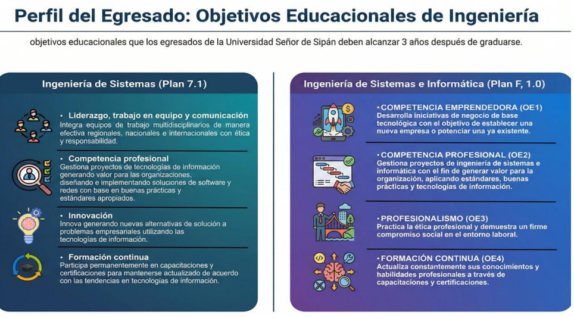

Perfil del Egresado
El egresado podrá diseñar, implementar y gestionar sistemas informáticos eficientes.

Facultad de Ingeniería, Arquitectura y Urbanismo
El programa de Ingeniería de Sistemas e Informática forma profesionales capacitados en el desarrollo de soluciones tecnológicas innovadoras.
Los estudiantes adquieren conocimientos en programación, bases de datos, inteligencia artificial y redes.
Se promueve la investigación, el pensamiento crítico y habilidades digitales.
También se fomenta la ética profesional y compromiso social.
El egresado podrá diseñar, implementar y gestionar sistemas informáticos eficientes.

| Curso | Créditos |
|---|---|
| Matemática I | 4 |
| Programación | 5 |
| Total | 9 |